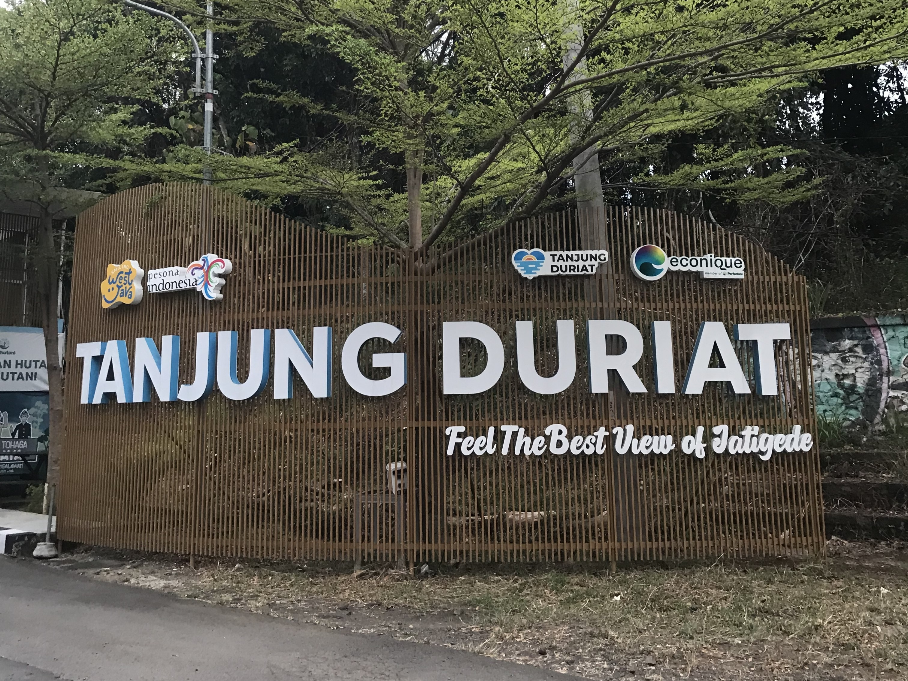
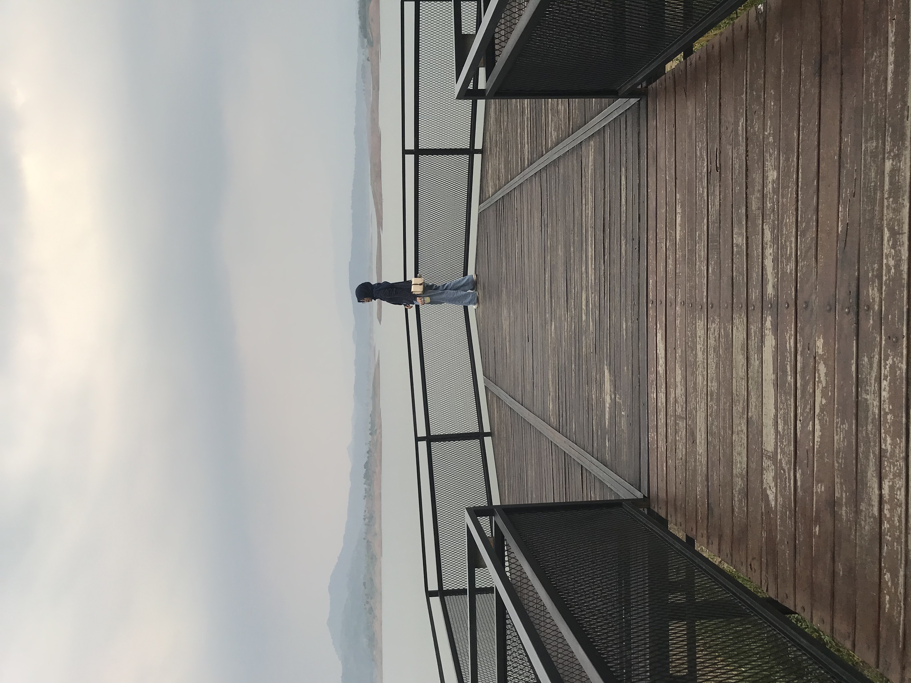
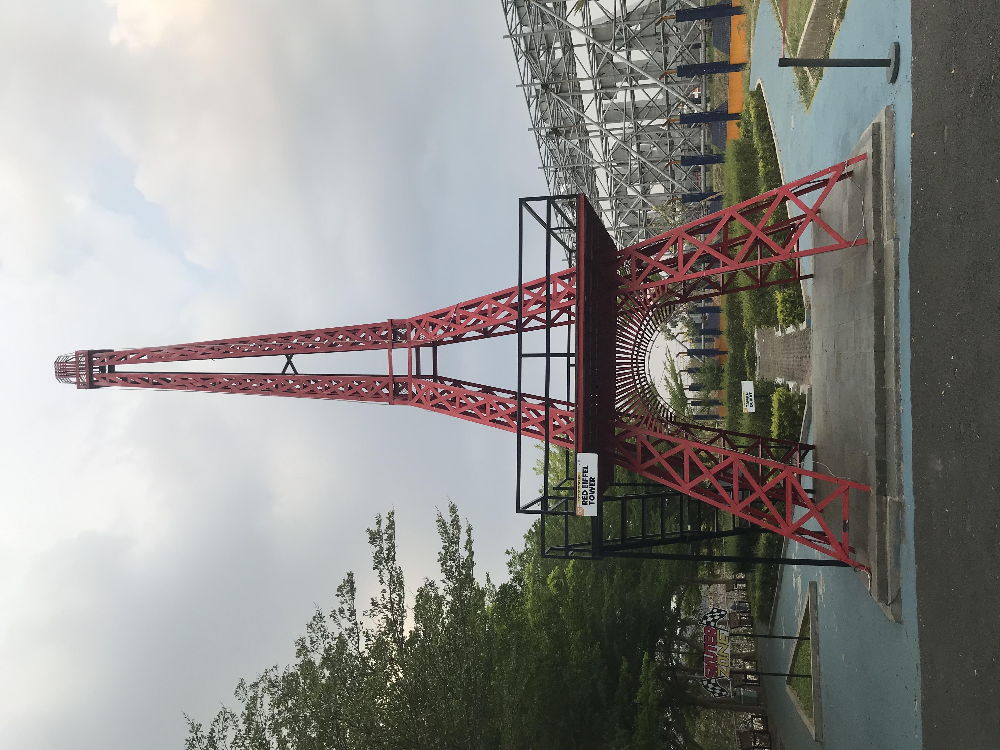
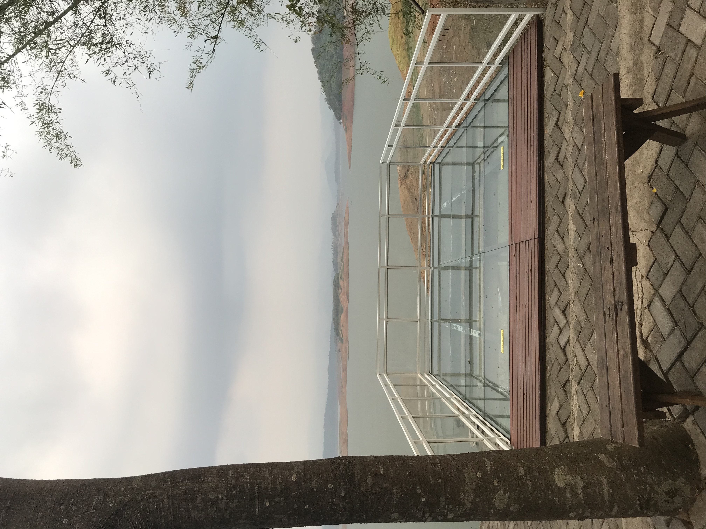
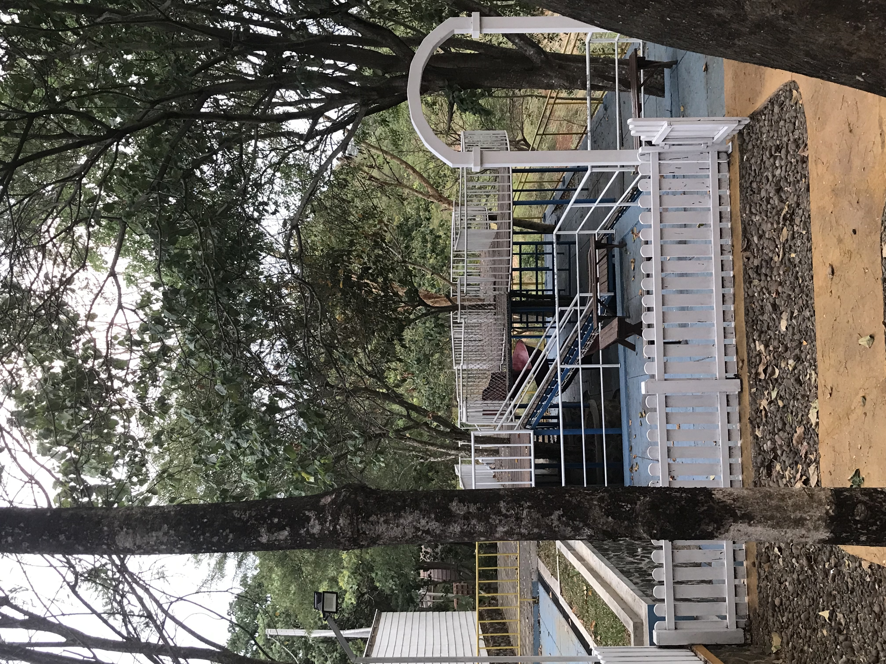
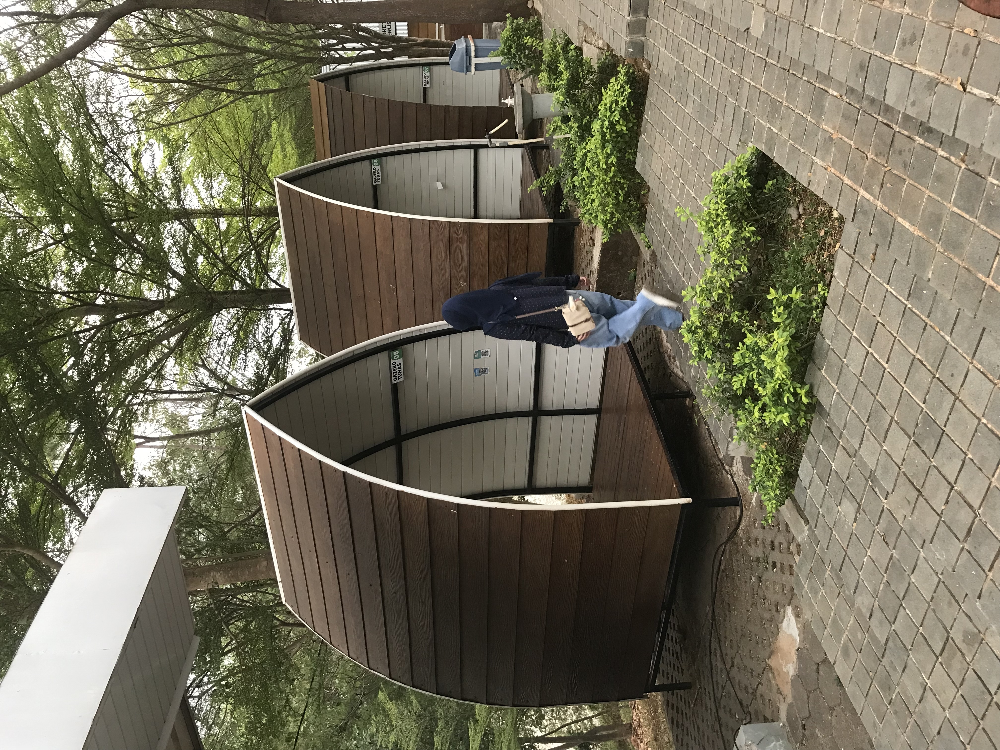
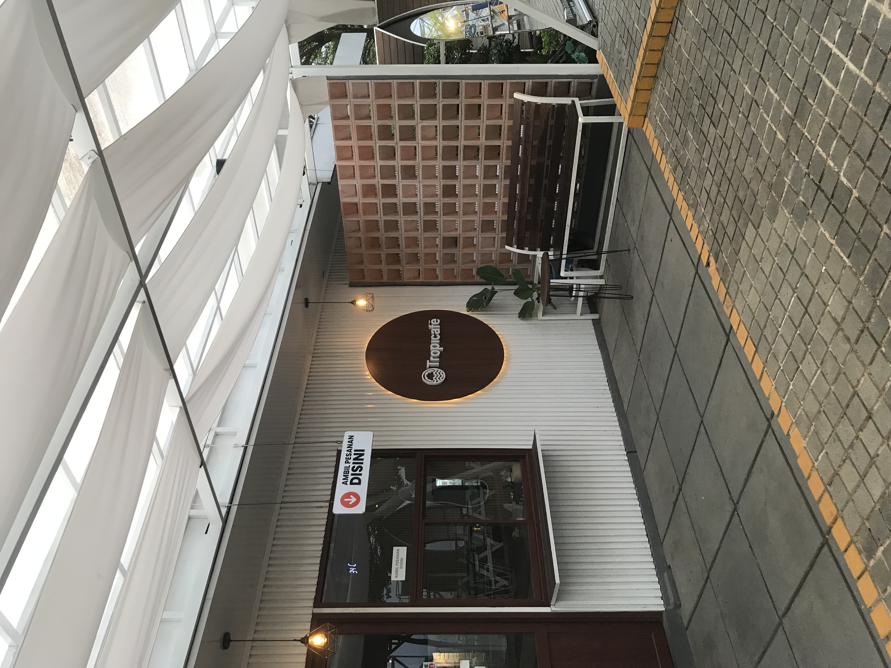
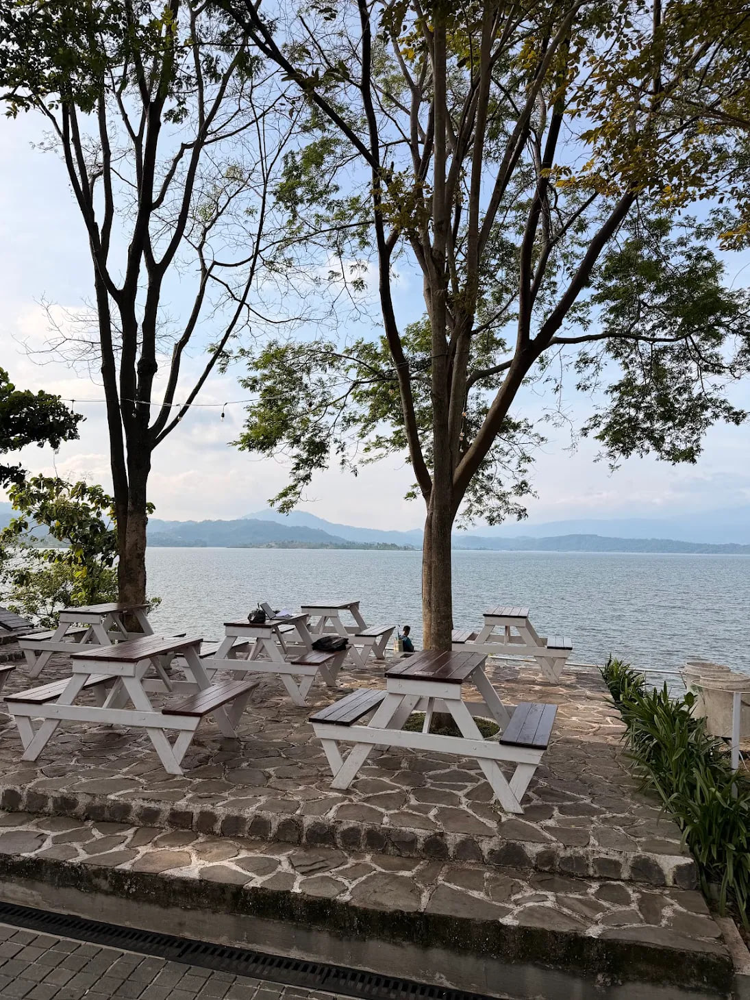
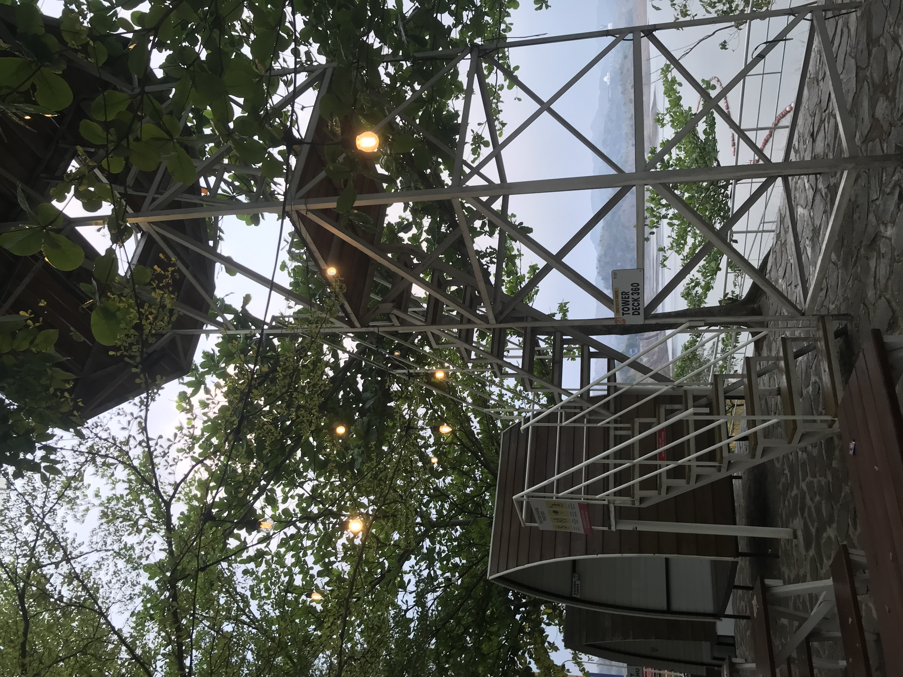
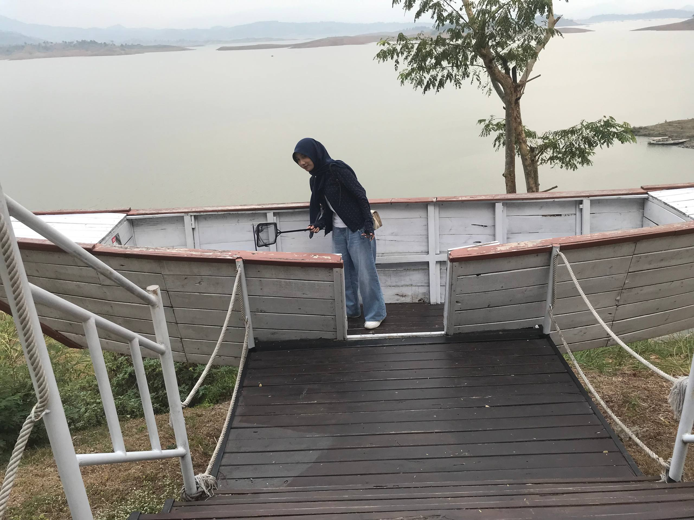

WISATA ALAM SUMEDANG
Nikmati keindahan alam dan panorama
Waduk Jatigede dari Tanjung Duriat.
TENTANG
Wisata Alam atau Wana Wisata Tanjung Duriat terletak di pesisir barat laut Bendungan Jatigede. Tempat wisata ini menyajikan indahnya pemandangan Bendungan Jatigede dari atas bukit yang menjorok ke arah bendungan. Sehingga tidak heran jika dinamakan dengan Tanjung.

Senin–Jumat
09.00–17.00 WIB
Sabtu, Minggu & Hari Libur
08.00–17.00 WIB
Tiket dewasa Rp20.000
Tiket anak Rp10.000
Tiket dewasa Rp25.000
Tiket anak Rp10.000
Roda dua Rp5.000
Roda empat Rp10.000
Bus / truk Rp20.000
*Hari libur mencakup akhir pekan, hari libur nasional, cuti bersama, dan musim liburan.
PENGALAMAN DI TANJUNG DURIAT
Nikmati tiga wahana seru bersama teman maupun keluarga.
Rp30.000
1 orang · Maks. 15 menit
Rp50.000
2 orang · Maks. 20 menit
Rp100.000
5 orang · Maks. 30 menit
Mulai Rp5.000 / file foto
Jam layanan
Senin–Jumat: 09.00–17.00 WIB
Akhir pekan & hari libur: 08.00–17.00 WIB

Wooden Deck

Red Eiffel Tower

Glass Deck

Playground

Gazebo

Tropicafe

Bangku Taman

Tower Deck

Spot Foto Perahu
LIHAT LEBIH DEKAT
Saksikan suasana dan keindahan Tanjung Duriat.
▶ Tonton video di YouTube ↗